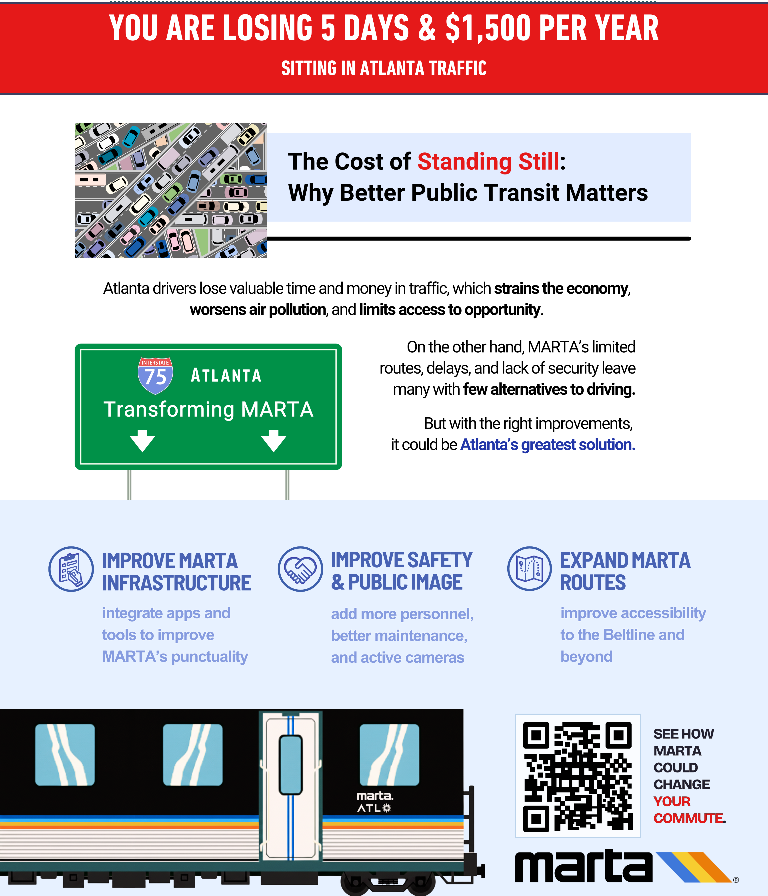

Defining the Problem
Atlanta’s rapid population growth has pushed its transportation system to the breaking point. Traffic congestion costs commuters over 100 hours and $1,500 every year, and most major highways—especially around the I-285 perimeter—experience daily gridlock. Despite being the region’s primary public transit system, MARTA has struggled to keep up due to limited coverage, inconsistent service, safety concerns, and negative public perception. Many high-growth counties such as Cobb and Gwinnett lack any MARTA rail service, forcing more residents to rely on single-occupancy vehicles. Unless Atlanta expands and modernizes its transit infrastructure, congestion, pollution, and commuter dissatisfaction will continue to worsen.
Our Solution
Our proposal outlines a multi-phase plan to revitalize and expand MARTA, making it a reliable, safe, and widely accessible alternative to driving.
Key components include:
- Modernizing MARTA’s Existing Infrastructure
- Reducing delays and cancellations through stronger maintenance protocols
- Improving communication between trains, buses, and the MARTA app
- Updating stations, escalators, tracks, and rail cars
- Strengthening Safety & Shifting Public Perception
- Increasing MARTA Police presence and updated 24/7 surveillance
- Deep-cleaning and renovating stations
- Launching marketing efforts to rebrand MARTA as safe, dependable, and appealing to all income groups
- Expanding Rail & Bus Coverage Across Metro Atlanta
- Extending MARTA into Cobb, Gwinnett, and northern Fulton
- Expanding service beyond the I-285 loop
- Introducing additional routes between existing lines
- Adding new stations along the Beltline for walkability and community access
Impact
By implementing our proposal, MARTA can transform into a modern, efficient transit system that meets the needs of Atlanta’s growing population. Expected benefits include:
- Reduced traffic congestion and commute times
- Lower greenhouse gas emissions and improved air quality
- Increased economic development around new and existing stations
- Enhanced quality of life through greater mobility options
- Stronger regional connectivity across metro Atlanta
With strategic investments and community support, MARTA can become the backbone of Atlanta’s transportation network, fostering a more sustainable and accessible city for all residents.
What You Can Do About It
Creating a better transit future for Atlanta requires collaboration across the entire community. Here’s how individuals, policymakers, and partners can contribute:
For Residents:
For Residents
- Support local ballots and initiatives that fund infrastructure improvements
- Use MARTA when possible—ridership helps secure future expansions
- Share honest feedback to help MARTA prioritize improvements
For Local Leaders & Stakeholders
- Approve regional partnerships that allow MARTA to expand into new counties
For Local Leaders & Stakeholders
- Approve regional partnerships that allow MARTA to expand into new counties
- Invest in long-term rail and bus development
For Local Leaders & Stakeholders
- Approve regional partnerships that allow MARTA to expand into new counties
- Invest in long-term rail and bus development
- Encourage economic development around MARTA stations (transit-oriented communities)
For Businesses
- Promote MARTA as a commuting option to employees
- Partner in sponsorships, safety initiatives, or station improvements
A revitalized MARTA depends on a united effort to build a reliable, respected, and accessible public transit system for the entire region.
The poster serves as a visual representation of the transformation we hope to inspire—a MARTA that Atlanta residents would be proud to ride.
References
Atlanta Journal-Constitution (AJC) - MARTA plans smaller budget with focus: cleanliness, safety and reliability.
Atlanta metro area population (1950-2025). MacroTrends
Doug Monroe, By, & Monroe, D: Where it all went wrong. Atlanta Magazine.
Final report | Gwinnett County. (n.d.).
Green, J. (2025, March 5). Why is transit ridership sinking in Atlanta and not other cities?. Urbanize Atlanta.
Marta. (n.d.-a).
https://itsmarta.com/marta-adopts-balanced-budget-prioritizes.aspx
https://itsmarta.com/capitalprojects.aspx
https://itsmarta.com/projectsnapshot.aspx
https://itsmarta.com/join-the-force.aspx
https://itsmarta.com/cex-at-marta.aspx
https://itsmarta.com/bod-overview.aspx
Marta Atlanta Summary of Technical Analysis Introduction. (n.d.-a).
Plazas, D. (2025, June 10). Marta suffers from problems, both real and perceived, our readers say. ajc.
Safe, M. R. (2025, April 2). Atlanta’s traffic congestion: Exploring solutions. Safe Roads USA.
Torres, M. (2022, February 26). The failures of Marta. Technique.
Westerstahl, M. (2024, June 9). The marta gridlock. 3484 Magazine.
Contact
You can reach us at lmc@example.com.